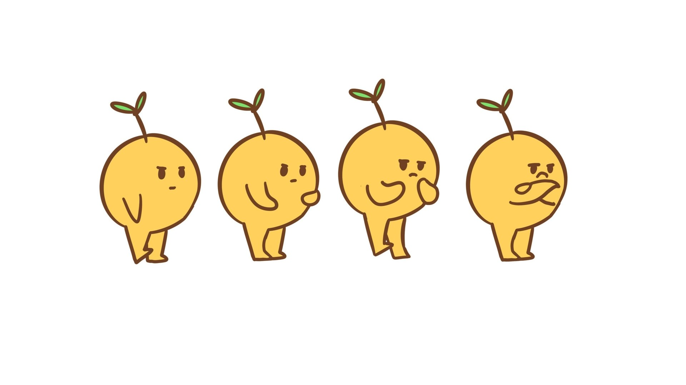

Secondary Action
Good secondary action energizes your shots and marks the difference between being a competent animator and an entertaining visual storyteller. If you have the urge to do film animation, you must understand and embrace this principle.
Surprisingly, it might be the most misunderstood animation principle, at least among beginning animators. Look up “Secondary Action” on the internet, and you’ll a fair amount of confusion and outright nonsense, as well as a lot of vagueness. So let’s start with some definitions.
What seems to confuse people about secondary action is the word “action”. Secondary action is not so much physical as it is behavioral. The primary action of a scene is the thing the scene is about. It’s the action the character is manifestly trying to accomplish; it’s the main idea the of the story at that moment. It is the text of the storytelling.
Secondary action is something else the character is doing, something on top of or in addition to the primary action. It is a behavior that enlivens the scene, adds nuance and authenticity. It also reveals character, hints at back story, and so on. In the best cases, it helps provide the subtext of the storytelling.